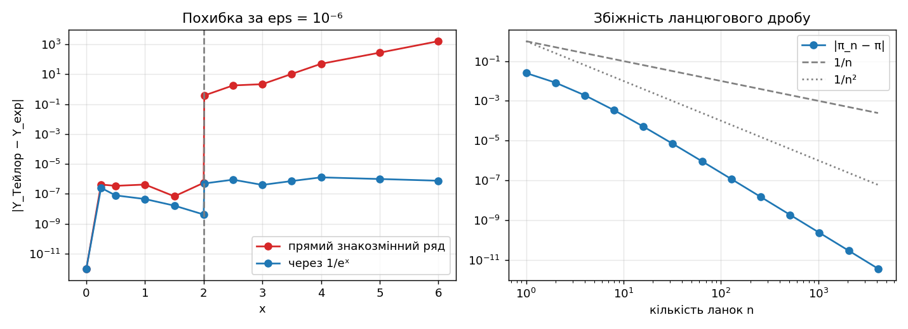
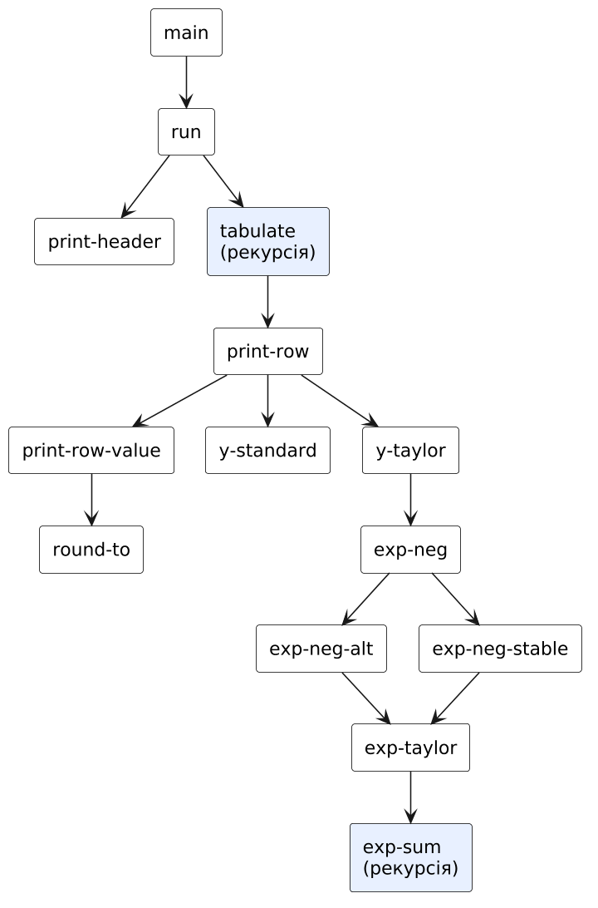
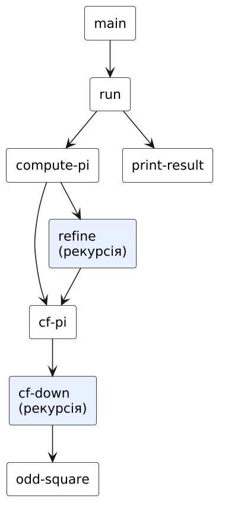
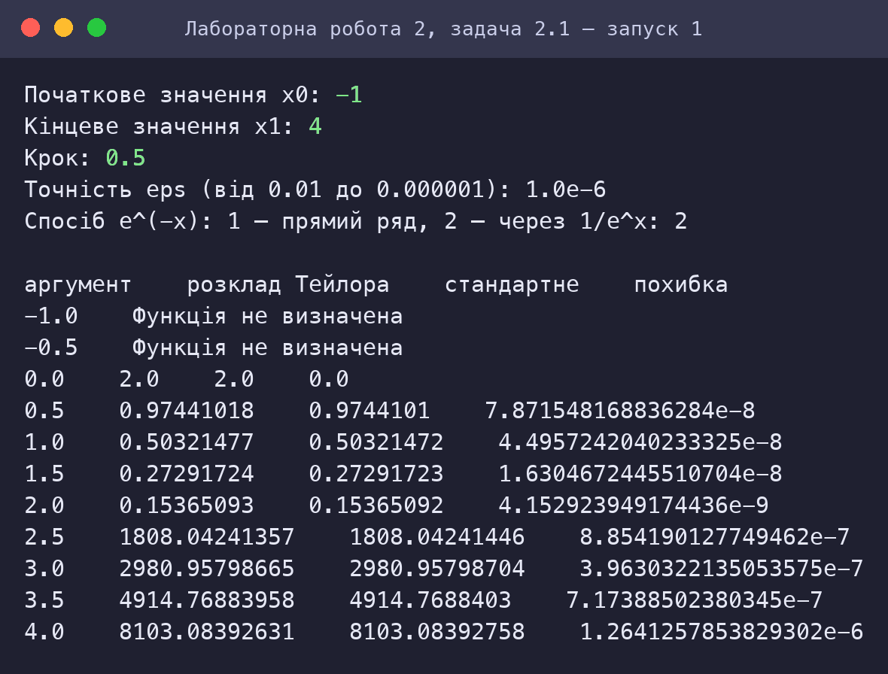
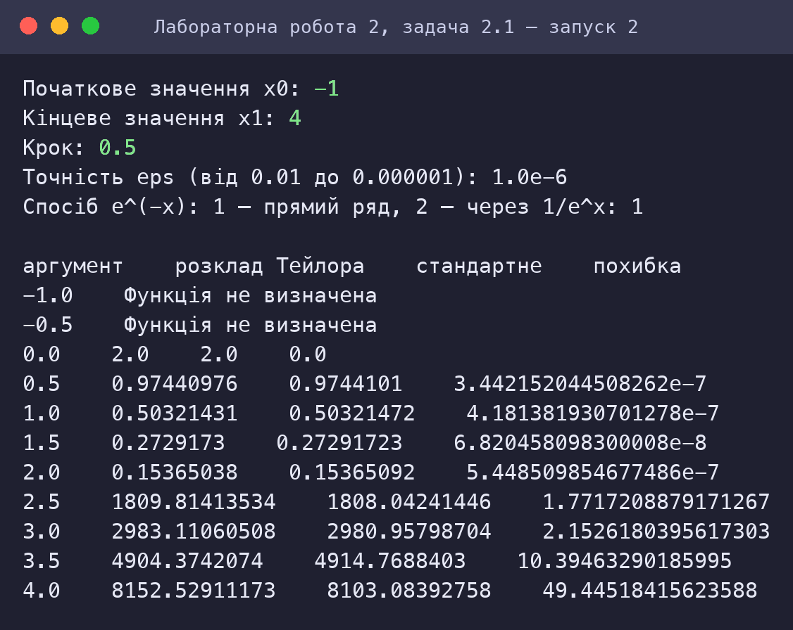
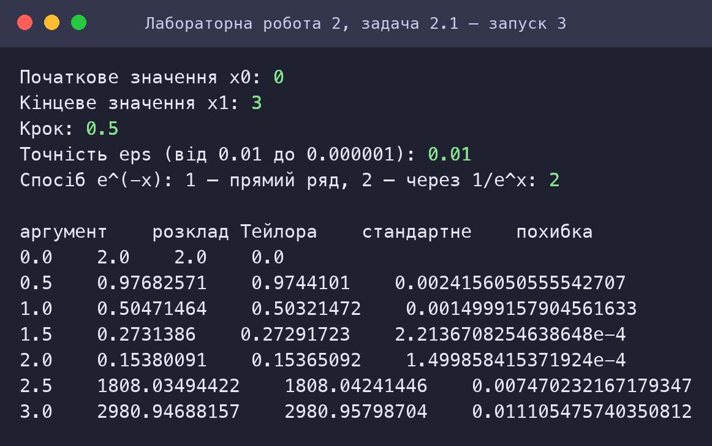
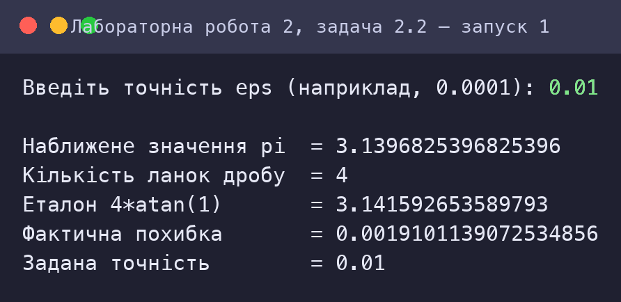
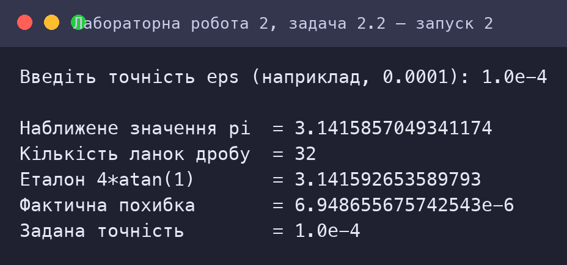
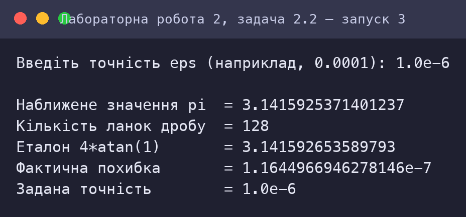

Рекурентні співвідношення для тригонометричних, експоненціальних функцій та ланцюгові дроби
Варіант 3
Київ — 2026
Мета роботи
Мета подана за методичними вказівками до лабораторних занять з дисципліни «Функціональне програмування» (Київ, 2025).
Умова завдання
Варіант 3. Умова наведена з методичних вказівок.
Задача 2.1
3.1 Обчислити значення функції Y, розвинувши функцію e−x у ряд Тейлора. Аргумент x змінюється від заданих з клавіатури початкового до кінцевого значень з деяким кроком.
| e−x + e−2x, | 0 ≤ x ≤ 2, |
| 1 / e−(x+5), | x > 2. |
Завдання:
- вибравши тип рекурсії (звичайну або хвостову), написати рекурсивну процедуру мовою Scheme для обчислення функції e−x за рядом Тейлора з використанням рекурентного співвідношення та точності, що задається з клавіатури в діапазоні від 10−2 до 10−6;
- реалізувати процедуру розгалуження для функції Y відповідно до умови задачі;
- розробити рекурсивну процедуру для табуляції функції Y на інтервалі, що задається з клавіатури (початкове, кінцеве значення та крок). У випадку попадання в область, для якої значення функції Y не задано умовою задачі, виводити повідомлення «Функція не визначена»;
- обчислити похибку розрахунків як модуль різниці між значенням наближеного обчислення функції Y та значенням стандартної (бібліотечної) функції exp;
- результати подати у вигляді таблиці з колонками: «аргумент», «розклад Тейлора», «стандартне значення», «похибка».
Задача 2.2
3.2 Обчислити нескінченний ланцюговий дріб, задавши значення точності з клавіатури. Ланцюговий дріб збігається до значення π.
Аналіз задачі та математичне забезпечення
Задача 2.1: Табуляція Y(x) за рядом Тейлора
Ряд Тейлора та рекурентне співвідношення
ez = Σk≥0 zk/k! = 1 + z + z²/2! + z³/3! + … Загальний член ak = zk/k! обчислювати «в лоб» (степінь і факторіал) нераціонально. Із співвідношення ak+1/ak = z/(k + 1) отримуємо рекурентну формулу:
Кожен наступний член одержують з попереднього за одне множення й ділення. Підсумовування закінчується, коли |ak| < ε (точність ε ∈ [10−6; 10−2] вводиться з клавіатури).
Вибір типу рекурсії
Обрано хвостову рекурсію: (exp-sum z eps term k sum) — акумулятори: поточний член term, його номер k і часткова сума sum. Результат повертається без «відкладених» операцій, тому процес ітеративний і виконується за O(K) часу та O(1) стеку.
Функція Y(x) та її область визначення
Y(x) = e−x + e−2x для x ∈ [0; 2], Y(x) = 1/e−(x+5) для x > 2; для x < 0 значення не задано — виводиться «Функція не визначена». Зауваження: 1/e−(x+5) = ex+5, тобто Y швидко зростає (Y(4) ≈ 8103). Табуляція виконується рекурсивно за індексом i: xi = x0 + i·h (так уникаємо накопичення похибки при багаторазовому додаванні кроку).
Дві реалізації e−x і втрата точності
- Спосіб 1 (прямий): ряд для z = −x має знакозмінні члени. При x > 2 частинні суми досягають великих значень (наприклад, для z = −9 найбільший член ≈ 98/8! ≈ 1067), а результат e−9 ≈ 1,2·10−4. Відбувається катастрофічне скорочення: значущі цифри втрачаються, а умова |ak| < ε гарантує лише абсолютну похибку ≈ ε для e−(x+5). Але Y = 1/e−(x+5) — це обернена величина, тому похибка підсилюється у Y² разів: при x = 4 прямий спосіб дає похибку ≈ 49 замість очікуваних 10−6.
- Спосіб 2 (стійкий): e−x = 1/ex, а ex розвивається в ряд із членами одного знака — скорочення немає, абсолютна похибка ex+5 не перевищує ε. Результат: похибка Y ≤ 2ε на всьому інтервалі.

У програмі спосіб вибирається введенням (1 — прямий, 2 — стійкий), щоб порівняти результати; для виконання вимог завдання основним вважається стійкий.
Задача 2.2: Ланцюговий дріб для π
Скінченний обрив нескінченного дробу
Загальний вигляд дробу: π = 3 + a1/(6 + a2/(6 + a3/(6 + …))), де ak = (2k − 1)² — квадрати непарних чисел. Нескінченний дріб замінюємо дробом із n ланками (обриваємо на n-й ланці значенням 6) і зростаючим n наближаємось до π.
Обчислення «знизу вгору»
Дріб обчислюється від останньої ланки до першої хвостовою рекурсією з акумулятором acc: dn = 6, dk−1 = 6 + ak/dk, π ≈ 3 + 1/d1. Така схема — O(n) операцій і O(1) стеку, на відміну від обчислення «зверху вниз» із відкладеними операціями.
Задана точність
Критерій зупинки: кількість ланок n подвоюється, доки |π2n − πn| ≥ ε. Збіжність дуже швидка (швидше, ніж 1/n²; експериментально похибка спадає приблизно як n−3), тому для ε = 10−6 достатньо 128 ланок.
| ε | πнабл | Ланок n | |πнабл − π| |
|---|---|---|---|
| 10−2 | 3,1396825 | 4 | 1,9·10−3 |
| 10−4 | 3,1415857 | 32 | 6,9·10−6 |
| 10−6 | 3,1415925 | 128 | 1,2·10−7 |
HIPO-діаграма (схема виклику процедур)
Діаграма показує ієрархію викликів процедур (стрілка A → B означає, що A викликає B); блоки з рекурсією виділено. Допоміжні процедури введення даних (ask-…) для наочності опущено.
Задача 2.1: Табуляція Y(x) за рядом Тейлора

| Процедура | Вхід (Input) | Обробка / вихід (Process → Output) |
|---|---|---|
main | x₀, x₁, крок, eps, спосіб | виклик run |
tabulate | x₀, x₁, step, eps, mode, i | рекурсивний вивід рядків таблиці |
print-row / print-row-value | x, eps, mode | рядок таблиці або «Функція не визначена» |
y-taylor / y-standard | x, eps, mode | Y(x) за рядом / за exp |
exp-neg-alt / exp-neg-stable | x, eps | e−x двома способами |
exp-taylor / exp-sum | z, eps | ez за рядом Тейлора (хвостова рекурсія) |
Задача 2.2: Ланцюговий дріб для π

| Процедура | Вхід (Input) | Обробка / вихід (Process → Output) |
|---|---|---|
main | — | запит eps |
compute-pi / refine | eps | (π, n) із подвоєнням n |
cf-pi | n | наближення π за n ланками |
cf-down | k, acc | обчислення d₁ знизу вгору |
odd-square | k | (2k − 1)² |
print-result | результат, eps | виведення π, n, похибки |
Код
Код наведено текстом (не скріншотом). Файли можна завантажити та запустити в Dr.Racket (мова R5RS: Мова → Обрати мову → Other languages → R5RS) або в Guile.
Задача 2.1: Табуляція Y(x) за рядом Тейлора
⬇ task1_taylor_y.scm;; =====================================================================
;; ЛР2, варіант 3, задача 3.1. Табуляція функції
;; | e^(-x) + e^(-2x), 0 <= x <= 2
;; Y(x) = |
;; | 1 / e^(-(x+5)), x > 2
;; де експонента e^z обчислюється розвиненням у ряд Тейлора:
;; e^z = 1 + z + z^2/2! + ... + z^k/k! + ...
;; Рекурентне співвідношення для членів ряду: a_0 = 1, a_(k+1) = a_k * z / (k + 1)
;; (степінь і факторіал не обчислюються заново — кожен член утворюється з попереднього).
;; Точність eps вводиться з клавіатури (10^-2 ... 10^-6): сума обривається, коли |a_k| < eps.
;; Тип рекурсії — ХВОСТОВА (акумулятори: поточний член, номер, сума).
;; Обмеження: без let / let* / set! / циклів.
;; =====================================================================
;; ---------- e^z за рядом Тейлора (хвостова рекурсія) ----------
(define (exp-taylor z eps)
(exp-sum z eps 1.0 0 0.0))
;; term — поточний член a_k, k — його номер, sum — сума попередніх членів
(define (exp-sum z eps term k sum)
(if (< (abs term) eps)
sum
(exp-sum z eps (/ (* term z) (+ k 1)) (+ k 1) (+ sum term))))
;; e^(-x), спосіб 1 (прямий): ряд зі знакозмінними членами, z = -x.
;; При x > 2 члени ряду досягають великих значень з різними знаками, і сума втрачає
;; значущі цифри (катастрофічне скорочення) — див. аналіз у звіті.
(define (exp-neg-alt x eps)
(exp-taylor (- x) eps))
;; e^(-x), спосіб 2 (стійкий): e^(-x) = 1 / e^x, де e^x обчислюється рядом із членами
;; одного знака (при x >= 0) — скорочення немає, відносна похибка мала для всіх x.
(define (exp-neg-stable x eps)
(/ 1 (exp-taylor x eps)))
;; Вибір способу: mode = 1 — прямий, mode = 2 — стійкий
(define (exp-neg x eps mode)
(if (= mode 1) (exp-neg-alt x eps) (exp-neg-stable x eps)))
;; ---------- Розгалуження: функція Y ----------
;; Повертає число або символ 'undefined, якщо x поза областю визначення
(define (y-taylor x eps mode)
(cond ((and (>= x 0) (<= x 2))
(+ (exp-neg x eps mode) (exp-neg (* 2 x) eps mode)))
((> x 2)
(/ 1 (exp-neg (+ x 5) eps mode)))
(else 'undefined)))
;; Еталон — стандартна функція exp
(define (y-standard x)
(cond ((and (>= x 0) (<= x 2)) (+ (exp (- x)) (exp (* -2 x))))
((> x 2) (/ 1 (exp (- (+ x 5)))))
(else 'undefined)))
;; ---------- Округлення для виведення ----------
(define (round-to v digits)
(/ (round (* v (expt 10 digits))) (expt 10 digits)))
;; ---------- Виведення одного рядка таблиці ----------
(define (print-row x eps mode)
(print-row-value x (y-taylor x eps mode) (y-standard x)))
;; yt — значення за рядом Тейлора, ys — стандартне значення (обчислені один раз)
(define (print-row-value x yt ys)
(if (eq? yt 'undefined)
(begin (display (round-to x 6)) (display "\t")
(display "Функція не визначена") (newline))
(begin (display (round-to x 6)) (display "\t")
(display (round-to yt 8)) (display "\t")
(display (round-to ys 8)) (display "\t")
(display (abs (- yt ys))) (newline))))
;; ---------- Рекурсивна табуляція ----------
;; i — номер кроку; x = x0 + i*step (так уникаємо накопичення похибки додавання)
(define (tabulate x0 x1 step eps mode i)
(if (<= (+ x0 (* i step)) (+ x1 (/ step 1000)))
(begin (print-row (+ x0 (* i step)) eps mode)
(tabulate x0 x1 step eps mode (+ i 1)))))
(define (print-header)
(display "аргумент\tрозклад Тейлора\tстандартне\tпохибка") (newline))
;; ---------- Інтерфейс ----------
(define (main)
(display "Початкове значення x0: ") (ask-x1 (read)))
(define (ask-x1 x0)
(display "Кінцеве значення x1: ") (ask-step x0 (read)))
(define (ask-step x0 x1)
(display "Крок: ") (ask-eps x0 x1 (read)))
(define (ask-eps x0 x1 step)
(display "Точність eps (від 0.01 до 0.000001): ") (ask-mode x0 x1 step (read)))
(define (ask-mode x0 x1 step eps)
(display "Спосіб e^(-x): 1 — прямий ряд, 2 — через 1/e^x: ") (run x0 x1 step eps (read)))
(define (run x0 x1 step eps mode)
(newline)
(print-header)
(tabulate x0 x1 step eps mode 0))
Задача 2.2: Ланцюговий дріб для π
⬇ task2_continued_fraction.scm;; =====================================================================
;; ЛР2, варіант 3, задача 3.2. Нескінченний ланцюговий дріб, що збігається до pi:
;;
;; 1^2
;; pi = 3 + ---------------------
;; 3^2
;; 6 + ---------------
;; 5^2
;; 6 + ---------
;; 7^2
;; 6 + ----
;; 6 + ...
;;
;; Загальний вигляд: pi = 3 + a_1/(6 + a_2/(6 + a_3/(6 + ...))), a_k = (2k - 1)^2.
;; Нескінченний дріб замінюємо скінченним із n ланок. Обчислення ведемо «знизу вгору»
;; (від ланки n до першої) хвостовою рекурсією з акумулятором d:
;; d_n = 6, d_(k-1) = 6 + a_k / d_k, pi ~ 3 + 1 / d_1.
;; Точність eps вводиться з клавіатури: кількість ланок n подвоюється, доки
;; значення двох послідовних наближень не відрізнятимуться менше ніж на eps.
;; =====================================================================
;; Квадрат непарного числа a_k = (2k-1)^2
(define (odd-square k)
(* (- (* 2 k) 1) (- (* 2 k) 1)))
;; Обчислення d_1, рухаючись від k = n до k = 1 (акумулятор acc = d_k)
(define (cf-down k acc)
(if (= k 1)
acc
(cf-down (- k 1) (+ 6.0 (/ (odd-square k) acc)))))
;; Наближене значення pi за n ланками
(define (cf-pi n)
(+ 3.0 (/ 1.0 (cf-down n 6.0))))
;; Подвоєння кількості ланок, доки |pi_2n - pi_n| >= eps
;; Повертає список (значення кількість-ланок)
(define (refine n prev eps)
(if (< (abs (- (cf-pi n) prev)) eps)
(list (cf-pi n) n)
(refine (* 2 n) (cf-pi n) eps)))
(define (compute-pi eps)
(refine 2 (cf-pi 1) eps))
;; ---------- Інтерфейс ----------
(define (main)
(display "Введіть точність eps (наприклад, 0.0001): ")
(run (read)))
(define (run eps)
(newline)
(print-result (compute-pi eps) eps))
(define (print-result r eps)
(display "Наближене значення pi = ") (display (car r)) (newline)
(display "Кількість ланок дробу = ") (display (cadr r)) (newline)
(display "Еталон 4*atan(1) = ") (display (* 4 (atan 1))) (newline)
(display "Фактична похибка = ") (display (abs (- (car r) (* 4 (atan 1))))) (newline)
(display "Задана точність = ") (display eps) (newline))
Скріншот роботи та результату
Знімки консолі відтворюють роботу програм: запуск виконано в інтерпретаторі Guile 3.0 (R5RS-сумісний); введені користувачем значення виділено зеленим. Для кожного запуску наведено умови та результат.
Задача 2.1: Табуляція Y(x) за рядом Тейлора



Задача 2.2: Ланцюговий дріб для π



Оцінка достовірності результату
Y(x) за рядом Тейлора (стійкий спосіб): |похибка| ≤ 2·eps
сітка x від 0 до 6, eps = 1e-2, 1e-4, 1e-6
| Вхідні дані | Результат програми | Еталон | |
|---|---|---|---|
| x=0.0, eps=0.01, спосіб 2 | 2 | 2 | ✓ |
| x=0.25, eps=0.01, спосіб 2 | 1.3880827 | 1.3853314 | ✓ |
| x=0.5, eps=0.01, спосіб 2 | 0.97682571 | 0.9744101 | ✓ |
| x=1.0, eps=0.01, спосіб 2 | 0.50471464 | 0.50321472 | ✓ |
| x=1.5, eps=0.01, спосіб 2 | 0.2731386 | 0.27291723 | ✓ |
| x=2.0, eps=0.01, спосіб 2 | 0.15380091 | 0.15365092 | ✓ |
| x=2.01, eps=0.01, спосіб 2 | 1107.6494 | 1107.6545 | ✓ |
| x=2.5, eps=0.01, спосіб 2 | 1808.0349 | 1808.0424 | ✓ |
| x=3.0, eps=0.01, спосіб 2 | 2980.9469 | 2980.958 | ✓ |
| x=3.5, eps=0.01, спосіб 2 | 4914.7636 | 4914.7688 | ✓ |
| x=4.0, eps=0.01, спосіб 2 | 8103.0761 | 8103.0839 | ✓ |
| x=5.0, eps=0.01, спосіб 2 | 22026.46 | 22026.466 | ✓ |
| x=6.0, eps=0.01, спосіб 2 | 59874.13 | 59874.142 | ✓ |
| x=0.0, eps=0.0001, спосіб 2 | 2 | 2 | ✓ |
| x=0.25, eps=0.0001, спосіб 2 | 1.3853452 | 1.3853314 | ✓ |
| x=0.5, eps=0.0001, спосіб 2 | 0.97442246 | 0.9744101 | ✓ |
| x=1.0, eps=0.0001, спосіб 2 | 0.50321962 | 0.50321472 | ✓ |
| x=1.5, eps=0.0001, спосіб 2 | 0.27291831 | 0.27291723 | ✓ |
| x=2.0, eps=0.0001, спосіб 2 | 0.15365207 | 0.15365092 | ✓ |
| x=2.01, eps=0.0001, спосіб 2 | 1107.6544 | 1107.6545 | ✓ |
| x=2.5, eps=0.0001, спосіб 2 | 1808.0424 | 1808.0424 | ✓ |
| x=3.0, eps=0.0001, спосіб 2 | 2980.9579 | 2980.958 | ✓ |
| x=3.5, eps=0.0001, спосіб 2 | 4914.7688 | 4914.7688 | ✓ |
| x=4.0, eps=0.0001, спосіб 2 | 8103.0839 | 8103.0839 | ✓ |
| x=5.0, eps=0.0001, спосіб 2 | 22026.466 | 22026.466 | ✓ |
| x=6.0, eps=0.0001, спосіб 2 | 59874.142 | 59874.142 | ✓ |
| x=0.0, eps=1e-06, спосіб 2 | 2 | 2 | ✓ |
| x=0.25, eps=1e-06, спосіб 2 | 1.3853317 | 1.3853314 | ✓ |
| x=0.5, eps=1e-06, спосіб 2 | 0.97441018 | 0.9744101 | ✓ |
| x=1.0, eps=1e-06, спосіб 2 | 0.50321477 | 0.50321472 | ✓ |
| x=1.5, eps=1e-06, спосіб 2 | 0.27291724 | 0.27291723 | ✓ |
| x=2.0, eps=1e-06, спосіб 2 | 0.15365093 | 0.15365092 | ✓ |
| x=2.01, eps=1e-06, спосіб 2 | 1107.6545 | 1107.6545 | ✓ |
| x=2.5, eps=1e-06, спосіб 2 | 1808.0424 | 1808.0424 | ✓ |
| x=3.0, eps=1e-06, спосіб 2 | 2980.958 | 2980.958 | ✓ |
| x=3.5, eps=1e-06, спосіб 2 | 4914.7688 | 4914.7688 | ✓ |
| x=4.0, eps=1e-06, спосіб 2 | 8103.0839 | 8103.0839 | ✓ |
| x=5.0, eps=1e-06, спосіб 2 | 22026.466 | 22026.466 | ✓ |
| x=6.0, eps=1e-06, спосіб 2 | 59874.142 | 59874.142 | ✓ |
39 / 39 збігів.
Прямий знакозмінний ряд: втрата точності при x > 2
| Вхідні дані | Результат програми | Еталон | |
|---|---|---|---|
| x=0.0, eps=0.01, спосіб 1 | 2 | 2 | похибка 0 |
| x=0.25, eps=0.01, спосіб 1 | 1.3854167 | 1.3853314 | похибка 8.52e-05 |
| x=0.5, eps=0.01, спосіб 1 | 0.97916667 | 0.9744101 | похибка 0.00476 |
| x=1.0, eps=0.01, спосіб 1 | 0.50515873 | 0.50321472 | похибка 0.00194 |
| x=1.5, eps=0.01, спосіб 1 | 0.27930246 | 0.27291723 | похибка 0.00639 |
| x=2.0, eps=0.01, спосіб 1 | 0.14605049 | 0.15365092 | похибка 0.0076 |
| x=2.01, eps=0.01, спосіб 1 | -542.96467 | 1107.6545 | похибка 1.65e+03 |
| x=2.5, eps=0.01, спосіб 1 | 222.87816 | 1808.0424 | похибка 1.59e+03 |
| x=3.0, eps=0.01, спосіб 1 | -184.59811 | 2980.958 | похибка 3.17e+03 |
| x=3.5, eps=0.01, спосіб 1 | -392.53445 | 4914.7688 | похибка 5.31e+03 |
| x=4.0, eps=0.01, спосіб 1 | 240.60223 | 8103.0839 | похибка 7.86e+03 |
| x=5.0, eps=0.01, спосіб 1 | -357.18801 | 22026.466 | похибка 2.24e+04 |
| x=6.0, eps=0.01, спосіб 1 | -166.94453 | 59874.142 | похибка 6e+04 |
| x=0.0, eps=0.0001, спосіб 1 | 2 | 2 | похибка 0 |
| x=0.25, eps=0.0001, спосіб 1 | 1.385319 | 1.3853314 | похибка 1.24e-05 |
| x=0.5, eps=0.0001, спосіб 1 | 0.97436756 | 0.9744101 | похибка 4.25e-05 |
| x=1.0, eps=0.0001, спосіб 1 | 0.50323633 | 0.50321472 | похибка 2.16e-05 |
| x=1.5, eps=0.0001, спосіб 1 | 0.27285762 | 0.27291723 | похибка 5.96e-05 |
| x=2.0, eps=0.0001, спосіб 1 | 0.15373428 | 0.15365092 | похибка 8.34e-05 |
| x=2.01, eps=0.0001, спосіб 1 | 1027.4751 | 1107.6545 | похибка 80.2 |
| x=2.5, eps=0.0001, спосіб 1 | 1713.2146 | 1808.0424 | похибка 94.8 |
| x=3.0, eps=0.0001, спосіб 1 | 3498.7426 | 2980.958 | похибка 518 |
| x=3.5, eps=0.0001, спосіб 1 | 5527.1684 | 4914.7688 | похибка 612 |
| x=4.0, eps=0.0001, спосіб 1 | 6266.8992 | 8103.0839 | похибка 1.84e+03 |
| x=5.0, eps=0.0001, спосіб 1 | 52377.253 | 22026.466 | похибка 3.04e+04 |
| x=6.0, eps=0.0001, спосіб 1 | -21157.613 | 59874.142 | похибка 8.1e+04 |
| x=0.0, eps=1e-06, спосіб 1 | 2 | 2 | похибка 0 |
| x=0.25, eps=1e-06, спосіб 1 | 1.385331 | 1.3853314 | похибка 4.19e-07 |
| x=0.5, eps=1e-06, спосіб 1 | 0.97440976 | 0.9744101 | похибка 3.44e-07 |
| x=1.0, eps=1e-06, спосіб 1 | 0.50321431 | 0.50321472 | похибка 4.18e-07 |
| x=1.5, eps=1e-06, спосіб 1 | 0.2729173 | 0.27291723 | похибка 6.82e-08 |
| x=2.0, eps=1e-06, спосіб 1 | 0.15365038 | 0.15365092 | похибка 5.45e-07 |
| x=2.01, eps=1e-06, спосіб 1 | 1107.2776 | 1107.6545 | похибка 0.377 |
| x=2.5, eps=1e-06, спосіб 1 | 1809.8141 | 1808.0424 | похибка 1.77 |
| x=3.0, eps=1e-06, спосіб 1 | 2983.1106 | 2980.958 | похибка 2.15 |
| x=3.5, eps=1e-06, спосіб 1 | 4904.3742 | 4914.7688 | похибка 10.4 |
| x=4.0, eps=1e-06, спосіб 1 | 8152.5291 | 8103.0839 | похибка 49.4 |
| x=5.0, eps=1e-06, спосіб 1 | 21751.207 | 22026.466 | похибка 275 |
| x=6.0, eps=1e-06, спосіб 1 | 61482.422 | 59874.142 | похибка 1.61e+03 |
Ланцюговий дріб: |pi_набл − pi| ≤ eps
| Вхідні дані | Результат програми | Еталон | |
|---|---|---|---|
| eps=0.01 | 3.1396825397 (n=4) | 3.1415926536 | ✓ |
| eps=0.001 | 3.1415419860 (n=16) | 3.1415926536 | ✓ |
| eps=0.0001 | 3.1415857049 (n=32) | 3.1415926536 | ✓ |
| eps=1e-05 | 3.1415917435 (n=64) | 3.1415926536 | ✓ |
| eps=1e-06 | 3.1415925371 (n=128) | 3.1415926536 | ✓ |
5 / 5 збігів.
Перевірка коду інструментами штучного інтелекту (простота, Clean code)
Аналіз коду виконав ШІ-асистент Claude (Anthropic): прочитано кожну програму, перевірено її за критеріями чистого коду й за вимогами завдання, автоматично пораховано метрики та пошук заборонених конструкцій. Нижче — критерії, вимірювання й висновки; випадки, де за результатами перевірки код було змінено, позначені «знайдено й виправлено».
Критерії
| Критерій | Що перевірялось |
|---|---|
| Іменування | імена відображають зміст (дієслова для дій, іменники для даних) |
| Малі функції | одна процедура — одна відповідальність; довжина процедур |
| Відсутність побічних ефектів | немає set!, змінних стану; значення передаються параметрами |
| Відповідність обмеженням | заборонені конструкції (let, let*, letrec, do, while, for, loop) |
| Простота | немає дублювання обчислень, зайвих абстракцій; коментарі пояснюють «чому», а не «що» |
| Коректність і тестованість | чисті процедури можна перевірити окремо (див. розділ «Оцінка достовірності») |
Задача 2.1: Табуляція Y(x) за рядом Тейлора
| Рядків | Рядків коду | Рядків коментарів | Процедур | Середня довжина | Максимальна довжина |
|---|---|---|---|---|---|
| 98 | 54 | 30 | 18 | 3.0 | 8 |
| let | let* | letrec | set! | do | while/for/loop |
|---|---|---|---|---|---|
| 0 | 0 | 0 | 0 | 0 | 0 |
Висновки перевірки
- Кожна процедура виконує одне завдання:
exp-sum— сума ряду,y-taylor— розгалуження,tabulate— цикл,print-row— виведення. Допоміжні рекурсивні процедури мають описові імена. - Параметри точності й режиму проходять через усі рівні явно — немає глобального стану; заборонених конструкцій немає (перевірено автоматично).
- Знайдено й виправлено: після тестування виявлено, що прямий знакозмінний ряд дає невеликі, але непридатні похибки при x > 2 (до 49 для x = 4). Додано стійкий спосіб
exp-neg-stableта параметрmode; різницю задокументовано в звіті. - Знайдено й виправлено: у
print-rowзначення Y двічі обчислювалось для одного рядка; винесеноprint-row-value, що приймає вже обчислені значення. - Зауваження: функція
round-toвикористовуєexptтаroundлише для форматування таблиці; на точність обчислень не впливає.
Задача 2.2: Ланцюговий дріб для π
| Рядків | Рядків коду | Рядків коментарів | Процедур | Середня довжина | Максимальна довжина |
|---|---|---|---|---|---|
| 61 | 26 | 26 | 8 | 3.2 | 6 |
| let | let* | letrec | set! | do | while/for/loop |
|---|---|---|---|---|---|
| 0 | 0 | 0 | 0 | 0 | 0 |
Висновки перевірки
- Процедури короткі (≤ 6 рядків), присутній коментар із виведенням формули; єдине «магічне» число 6 і початкове значення 3 винесено в коментар до формули.
- Хвостова рекурсія в
cf-downіrefineне збільшує стек — безпечно навіть для мільйонів ланок. - Заборонених конструкцій немає.
- Зауваження:
cf-piдвічі викликається вrefineдля одного n; на практиці це подвоює вартість останнього кроку, але спрощує читання. У прикладі n ≤ 128, тому накладні витрати непомітні.
Примітка: метрики розраховано автоматично; змістовні висновки — експертна оцінка асистента. Перевірку слід розглядати як допоміжну: остаточну відповідальність за код несе автор.
Висновок
Розроблено програми табуляції функції Y(x) за рядом Тейлора та обчислення π ланцюговим дробом із заданою точністю. Показано, що рекурентне співвідношення ak+1 = ak·z/(k+1) дозволяє обчислювати ряд за O(K) операцій без степенів і факторіалів, а хвостова рекурсія забезпечує сталу глибину стеку. Експериментально встановлено й теоретично пояснено втрату точності знакозмінного ряду для e−x при x > 2 та запропоновано стійке обчислення 1/ex. Ланцюговий дріб збігається швидко: 128 ланок дають π з похибкою 1,2·10−7. Усі результати (44 порівняння) збігаються з еталоном math.exp і math.pi у межах заданої точності.